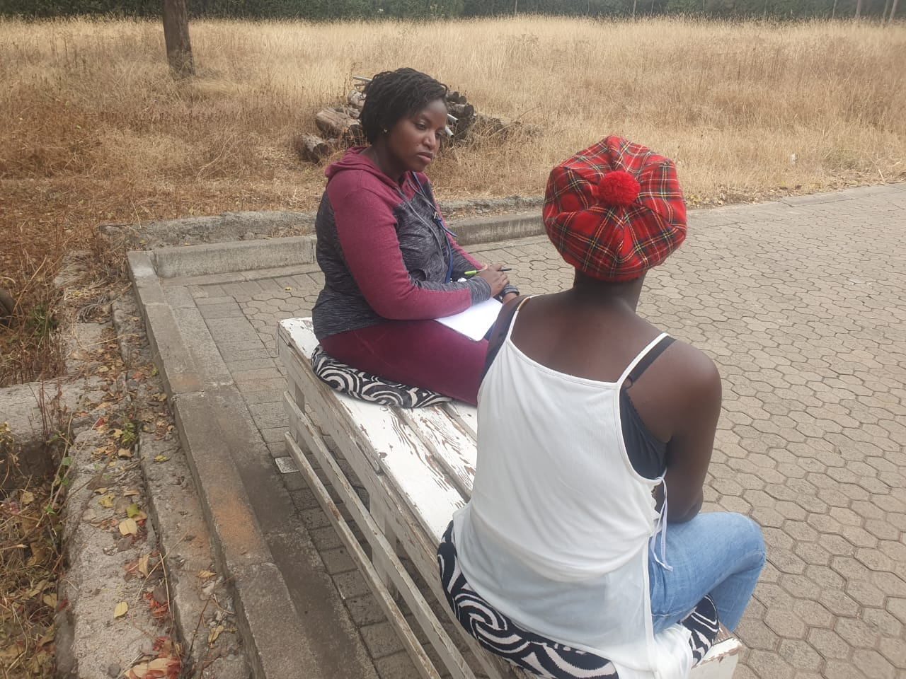
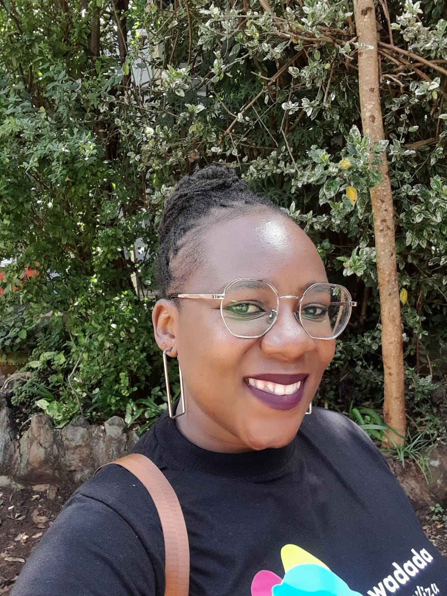
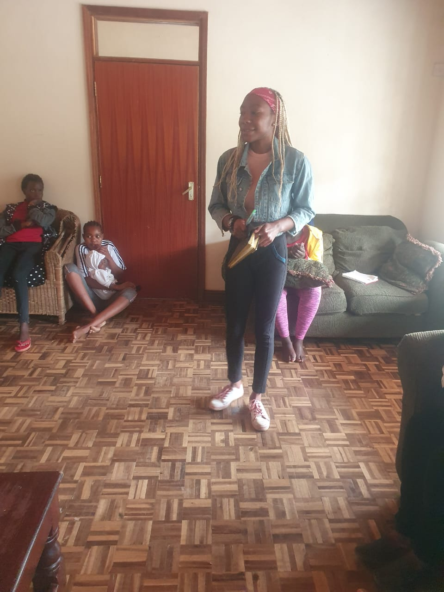
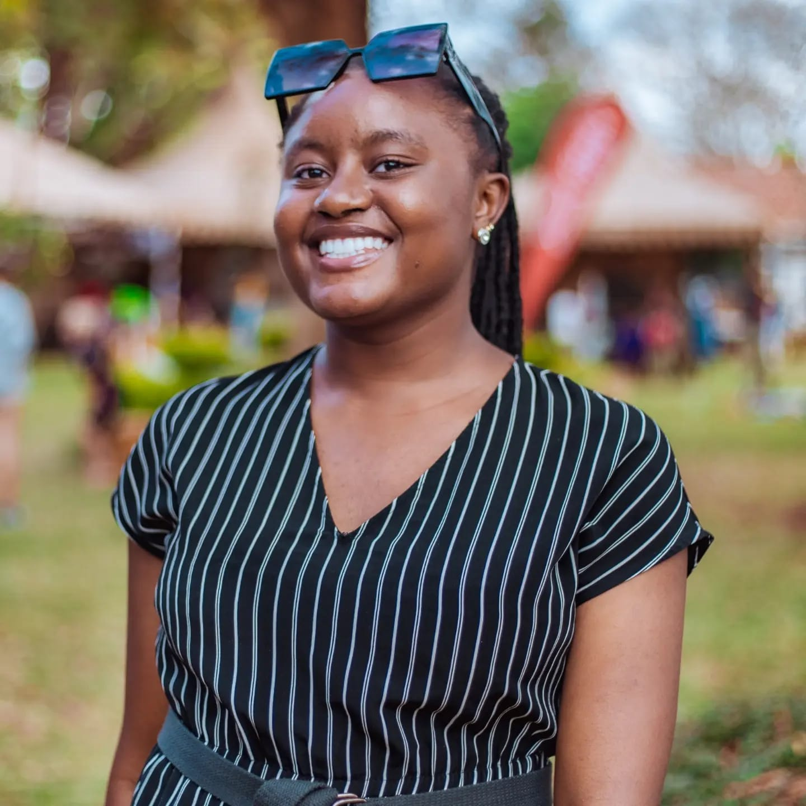
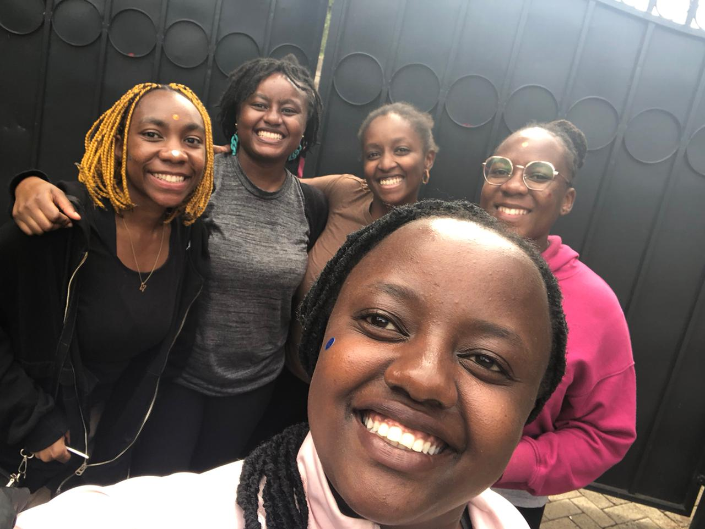

MEET THE TEAM
LEGAL TEAM
IRENE AKOTH OTTO

An Advocate of the High Court of Kenya with over 5 years' qualification experience.
She has a keen interest in the development of law and has demonstrable excellence in her work.
She employs a true global approach and is the head of the legal department at Ajani Centre.
NAIMA RAJAB
An Advocate of the High Court of Kenya with over 6 years' experience in the Human Rights space.
Naima is also a mediator at Nimraj consultancy.
She is passionate about legal empowerment and helps Kenyans use and shape the law through civic
engagement and public participation.
STACY MURUGI
An Advocate of the High Court of Kenya with over 5 years' experience in litigation and non-contentious
practice.
She is a certified professional mediator and is very passionate about human rights, especially those of
women and children.
She is also the Human Resource Manager at Ajani.
PURITY WADEGU
An Advocate of the High Court of Kenya with a Bachelor's degree of Law from Kenyatta University and a
postgraduate diploma from the Kenya School of Law.
Purity has extensive knowledge and experience in litigation, human rights law, and activism.
She is also the Executive Director at Ajani.
PSYCHOSOCIAL SUPPORT SERVICES
OUMA SOROPHINA AKINYI
A holder of a Bachelor's Degree in Counselling Psychology,Sorophina is a Licensed counselor under the Kenya Counselling Psychologist Association (KCPA).
She currently volunteers and work with children by offering art and play therapy while also offering tutoring services for them.
She is also the head of the counselling department at Ajani Center for Rights and Care.
GLORIA KINYA MICHENI
A counselling psychologist with a Bachelor's Degree from the Catholic University of Eastern Africa and holder of a Master's Degree in Mangement Organizational Development from the United States International UNiversity.
She is passionate about loss and rief counselling,drug and substance abuse counseling, psycho education and mentorship.
ESTHER WANGU NGATIA
She is a counselling psychologist with a passion for supporting SGBV survivors.
She also plays a role in the communications department, leveraging expertise to raise awareness, advocate for change and empower the cmmuntiy.
She comes armed with empathy and communication skills, to foster healing, resillience and understanding.
For better running of our activities, the organisation also has other valuable members spread out through various departments. they are as follows :
ZENA ABDULRAHMAN MUSA

Zena is a skilled program officer with over 4 years experience in project management, community mobilization and avocacy, leadership, training and capacity building, community oureach and paralegal work.
she is the Program officer at Ajani
STEPHANIE ATIENO
Stephanie holds a Diploma in mass comunication attained from the Kenya Institute of Mass Communication.
She brings her wealth of experience in writing and research to the communications department and Ajani.
MAKKA YUSUF
She is a paralegal who works closely with the team in the legal department.
She has several years of experience as a sexual and gender based community paralegal.
POLINE OTOO
Poline is an accountant by proffesion and is the chief finanicial officer at Ajani Centre.